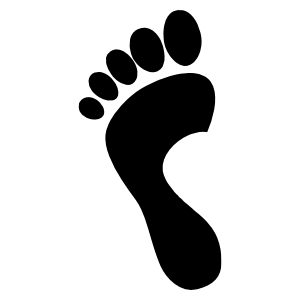

Home
Parcours
Expériences professionelles
ETUDES
Etudes littéraires -
Bac L - Mention bien
St Thomas de Villeneuve,
Chaville (72)
Option Art plastique
BTS communication
Cesacom / 2013 -2015
STAGES

2014 - (1 mois)
CAP 4 DEVENT
Stage de relations commerciales
Prospection et mise en place d’une relation commerciale
2014 - (2 mois)
Isabelle Moreau
Stage de communication - Papeterie de luxe - Paris
Mise en place de techniques et supports de communication
2014 - (1 semaine) -
Imprimerie Frazier
- Découverte de la chaîne graphique
2012 - (2 semaines) -
Euro RSCG
Découverte de la promotion produits et du marketing
2010 - (1 semaine) -
France Télévision
Découverte du journalisme et de la presse audiovisuelle.
EXPERIENCES PROFESSIONELLES
2014 -
Marchés de Noêl
Conseillère de vente
Gestion des stocks, conseil et service de la clientèle
2014 - Street Diffusion
- Opération de Street Marketing - Versailles
Distribution de prospectus publicitaires
2013 -
Bel Air
- Conseillère de vente
Gestion des stocks, mise en rayon, conseil de la clientèle
2010 - 2014 - Saisonnière chez un maraicher - Calvados
Cueillette quotidienne des fruits.